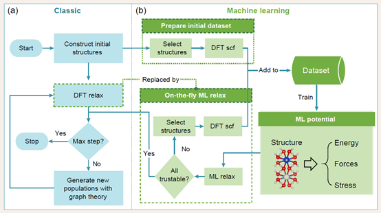
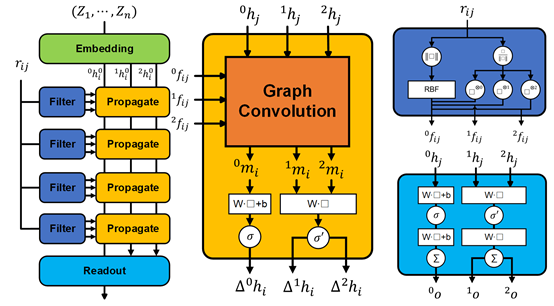
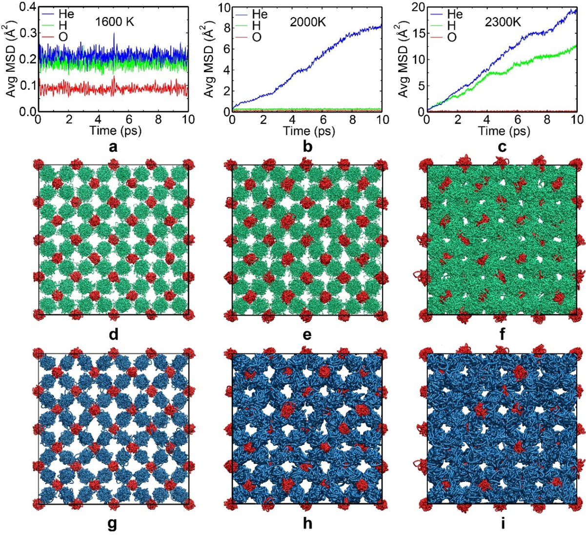
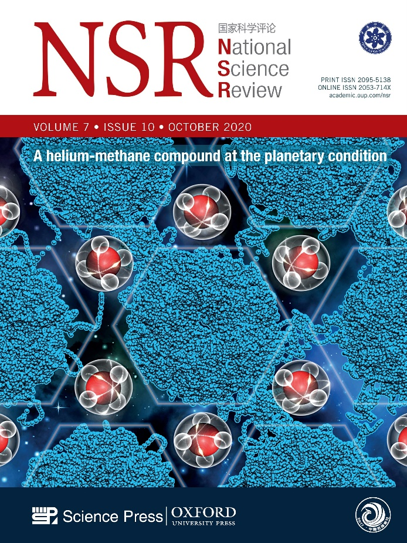
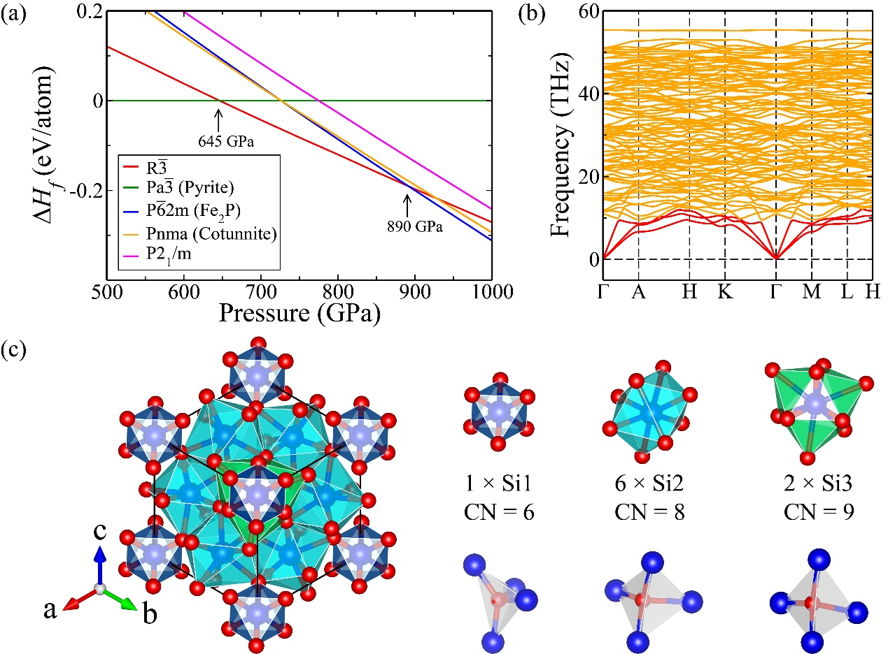
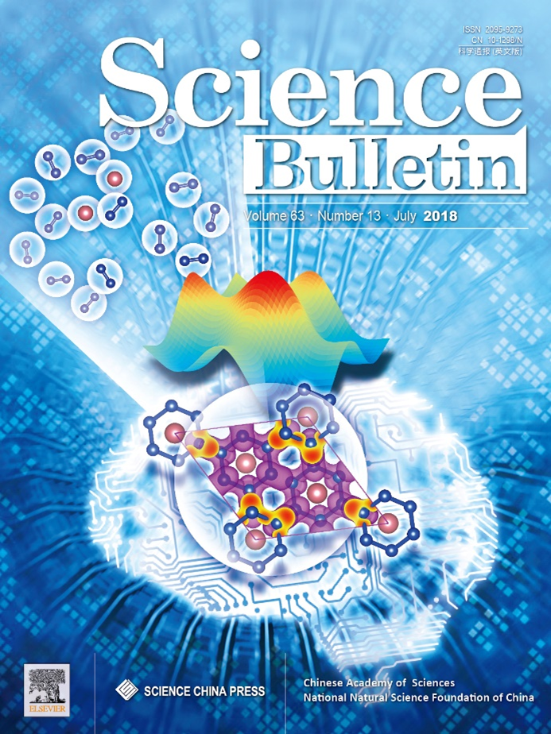

Home
Research
Publication
Members
The research work of Jian Sun’s Group
Prof. Jian Sun’s research group has long been dedicated to developing and applying machine learning-driven computational methods for material simulations, providing fundamental frameworks and tools for condensed matter physics and materials science research. In recent years, we have particularly focused on interdisciplinary fields including high-pressure physics, materials design, and planetary science, investigating material behaviors and properties under extreme conditions. Our work aims to design novel materials with superior performance while expanding the boundaries of human understanding of matter under extreme environments.
Research Direction 1: Development of Computational Methods
As the foundation of theoretical research in condensed matter physics and materials science, we focus on advancing computational methodologies including structure prediction, graph theory, machine learning force fields, and machine-learned Hamiltonians, striving to provide comprehensive solutions spanning crystal structures, dynamics, and electronic properties. Recent achievements include: the development of MAGUS, a machine learning and graph theory-enhanced crystal structure prediction method demonstrating over 10-fold acceleration compared to conventional first-principles searches; the creation of HotPP, a higher-order tensor message-passing machine learning force field achieving accuracy comparable to the world's most precise ML force fields; and collaborative development of GPUMD, a GPU-accelerated machine learning molecular dynamics engine capable of simulating systems with tens of millions of atoms using a single graphics card.


Research Direction 2: Dynamical Simulations of Novel States of Matter and Phase Transitions
While static calculations typically study zero-temperature properties, dynamical simulations form the basis for investigating finite-temperature states and phase transitions. Leveraging first-principles and machine learning molecular dynamics, we have made significant progress in characterizing exotic states (superionic, plastic crystal, and cooperative diffusion states, etc) and phase transition pathways. Key contributions include: predicting high-pressure helium-water/ammonia/methane compounds and Si-O-H, Mg-O-H compounds, that reshape understanding of planetary interior structures; revealing one-dimensional cooperative diffusion in compressed calcium with its electronic origin, discovering an elemental analog to superionic states; and elucidating high-pressure phase transition mechanisms in carbon and carbon dioxide systems that have guided experimental investigations.


Research Direction 3: Prediction and Design of High-Pressure Materials
High pressure serves as a crucial means to modulate material properties and synthesize novel materials. Our recent work spans predictions of geologically relevant materials under planetary interior conditions, nitrogen-rich ultrahard/energetic materials, superconductors, and topological quantum materials. Notable achievements include: identifying mixed-coordination SiO2 phases under Neptune's core conditions; designing superhard nitrogen-rich materials later experimentally synthesized; and proposing strategies for high-pressure synthesis of novel quantum materials.

